Algebra Transformations and Geometry Transformations
Welcome to Our Site
I greet you this day,
For the Classic ACT exam:
The ACT Mathematics test is a timed exam...60 questions in 60 minutes
This implies that you have to solve each question in one minute.
Each of the first 20 questions (less challenging) will typically take less than a minute a solve.
Each of the next 20 questions (medium challenging) may take about a minute to solve.
Each of the last 20 questions (more challenging) may take more than a minute to solve.
The goal is to maximize your time.
You use the time saved on the questions you solve in less than a minute to solve questions that will take more
than a minute.
So, you should try to solve each question correctly and timely.
So, it is not just solving a question correctly, but solving it correctly on time.
Please ensure you attempt all ACT questions.
There is no negative penalty for a wrong answer.
Also: please note that unless specified otherwise, geometric figures are drawn to scale. So, you can figure out
the correct answer by eliminating the incorrect options.
Other suggestions are listed in the solutions/explanations as applicable.
These are the solutions to the ACT past questions on the topics: Algebra Transformations and Geometry
Transformations.
When applicable, the TI-84 Plus CE calculator (also applicable to TI-84 Plus calculator) solutions are provided
for some questions.
The link to the video solutions will be provided for you. Please
subscribe to the YouTube channel to be notified of upcoming livestreams. You are welcome to ask questions during
the video livestreams.
If you find these resources valuable and helpful in your passing the
Mathematics test of the ACT, please consider making a donation:
Your donation is appreciated.
Comments, ideas, areas of improvement, questions, and constructive
criticisms are welcome.
Feel free to contact me. Please be positive in your message.
I wish you the best.
Thank you.
Algebra Transformations: Notable Notes and Formulas
SAMDOM FOR PEACE Pneumonic for the Transformation of Functions HOSH: Horizontal Shift HORE: Horizontal Reflection HOST: Horizontal Stretch HOCO: Horizontal Compression VECO: Vertical Compression VEST: Vertical Stretch VERE: Vertical Reflection VESH: Vertical Shift
$
y = f(x) ...Parent\;\;Function \\[3ex]
k = number \\[5ex]
(I.)\;\; y = f(x) + k ...VESH\;\;k\;\;units\;\;up \\[5ex]
(II.)\;\; y = f(x) - k ...VESH\;\;k\;\;units\;\;down \\[5ex]
(III.)\;\; y = f(x + k) ...HOSH\;\;k\;\;units\;\;left
\quad\dots\text{coordinates translated }\;\;k\;\;\text{units to the right} \\[5ex]
(IV.)\;\; y = f(x - k) ...HOSH\;\;k\;\;units\;\;right
\quad\dots\text{coordinates translated }\;\;k\;\;\text{units to the left} \\[5ex]
(V.)\;\; y = -f(x) ... VERE \\[5ex]
(VI.)\;\; y = f(-x) ... HORE \\[5ex]
(VII.)\;\; y = kf(x) \;\;\;where\;\;\; k \gt 1 ...VEST\;\;by\;\;factor\;\;of\;\;k
...multiply\;\;y-coordinate\;\;by\;\;k \\[5ex]
(VIII.)\;\; y = kf(x) \;\;\;where\;\;\; 0 \lt k \lt 1 ...VECO\;\;by\;\;factor\;\;of\;\;k
...multiply\;\;y-coordinate\;\;by\;\;k \\[5ex]
(IX.)\;\; y = f(kx) \;\;\;where\;\;\; 0 \lt k \lt 1 ...HOST\;\;by\;\;factor\;\;of\;\;k
...multiply\;\;x-coordinate\;\;by\;\;\dfrac{1}{k} \\[5ex]
(X.)\;\; y = f(kx) \;\;\;where\;\;\; k \gt 1 ...HOCO\;\;by\;\;factor\;\;of\;\;k
...multiply\;\;x-coordinate\;\;by\;\;\dfrac{1}{k}
$
Geometry Transformations: Notable Notes and Formulas
Translation (Sliding or Gliding)
For any point, (x1, y1);
A translation vector of <x, y> is the same as the translation rule of (x1 + x, y1+y)
Say:
preimage = (x1, y1),
translation vector = <x, y>,
image = (x2, y2);
then:
x2 = x1 + x
y2 = y1 + y
Translated left or right:
only the x-coordinate changes
the y-coordinate remains
Translated up or down:
only the y-coordinate changes
the x-coordinate remains
translated x units left:
then:
x2 = x1 − x
y2 = y1
translated x units right:
then:
x2 = x1 + x
y2 = y1
translated y units up:
then:
x2 = x1
y2 = y1 + y
translated y units down:
then:
x2 = x1
y2 = y1 − y
Reflection (Flipping)
On the x-axis, y-values are zero.
Reflecting across the x-axis:
y-coordinate changes, x-coordinate remains.
On the y-axis, x-values are zero.
Reflecting across the y-axis:
x-coordinate changes, y-coordinate remains.
Reflecting across the origin:
both the x-coordinate and the y-coordinate changes.
Reflecting across the line: x = k (k is a constant):
the x-coordinate changes, y-coordinate remains.
Reflecting across the line: y = k (k is a constant)
the y-coordinate changes, x-coordinate remains.
Reflecting across the line: y = x:
both the x-coordinate and the y-coordinate changes.
For any point, (x, y);
Reflection across the x-axis gives (x, −y)
Reflection across the y-axis gives (−x, y)
Reflection across the origin gives (−x, −y)
Reflection across the line: y = x gives (y, x)
Reflection across the line: y = k (k is a constant) gives (x, 2k − y)
Reflection across the line: x = k (k is a constant) gives (2k − x, y)
Rotation (Turning)
A preimage is rotated about the center of rotation through an angle of rotation.
If the preimage is rotated in a counterclockwise direction, the angle of rotation is positive.
If the preimage is rotated in a clockwise direction, the angle of rotation is negative.
Given:
the preimage (x, y),
the center of rotation as the origin (0, 0),
an angle of rotation, θ;
the image would be $(x', y')$
where:
$
x' = x\cos\theta - y\sin\theta \\[3ex]
y' = y\cos\theta + x\sin\theta \\[3ex]
$
For counterclockwise rotations, use the positive value of θ
For clockwise rotations, use the negative value of θ
Given:
the preimage (x1, y1),
the center of rotation as any point (x, y),
an angle of rotation, θ;
the image would be $(x_1', y_1')$
where:
(1.) Point (5, −1), which is graphed in the standard (x, y) coordinate plane below, will be
reflected across the x-axis.
What will be the coordinates of the image of P?
Reflected across the x-axis is Vertical Reflection
This implies that only the y-coordinate changes (by multiplying by −1).
The x-coordinate does not change.
(2.) In order to obtain the graph of a new function, g(t), the graph of f(t) is
translated 2 units to the right and then reflected over the x-axis.
The point (1, 90) on the graph of f(t) corresponds to what point on the graph of
g(t)?
$
\underline{\text{Translated 2 units to the right: x-coordinate changes}} \\[3ex]
(1, 90) \rightarrow (1 + 2, 90) \\[3ex]
\hspace{3em} \rightarrow (3, 90) \\[5ex]
\underline{\text{Reflected over the x-axis: Vertical Reflection: y-coordinate changes}} \\[3ex]
(3, 90) \rightarrow (3, -90)
$
(3.) In the standard (x, y) coordinate plane below, $\triangle$ABC will be translated 10 units
down and then the resulting image will be reflected over the y-axis.
What will be the coordinates of the final image of A resulting from both transformations?
Translated up or down is only for the y-coordinate
For any point, (x, y); reflection across the y-axis gives (−x, y)
We are only concerned with Point A
(4.) A point at (−5, 7) in the standard (x, y) coordinate plane is translated right 7 coordinate
units and down
5 coordinate units.
What are the coordinates of the point after the translation?
$
Point: (-5, 7) \\[3ex]
x = -5, y = 7 \\[3ex]
\underline{\text{Translated 7 units right: x-coordinate changes}} \\[3ex]
-5 + 7 = 2 \\[3ex]
(-5, 7) \rightarrow (2, 7) \\[3ex]
x = 2, y = 7 \\[5ex]
\underline{\text{Translated 5 units down: y-coordinate changes}} \\[3ex]
7 - 5 = 2 \\[3ex]
(2, 7) \rightarrow (2, 2)
$
(5.) The figure below shows 3 circles in the standard (x, y) coordinate plane.
Which of the following shows the reflection of the 3 circles across the x-axis?
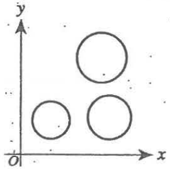
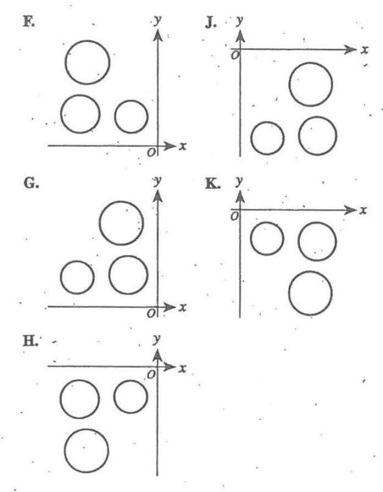
It is highly recommended to solve this question geometrically.
(1.) Reflection is Flipping
(2.) Reflection across the x-axis means same x-values but different y-values
(3.) So, just flip the three circles across the x-axis
It is going to be the same positive x-axis (same x-values)
However, the 2 circles will be the top and the 3rd bigger circle will be below the 2 circles
Option K. is the correct option
(6.) Point A is located at (3, 8) in the standard (x, y) coordinate plane.
What are the coordinates of A', the image of A after it is reflected across the y-axis?
A. (3, −8) B. (−3, −8) C. (−3, 8) D. (8, 3) E. (−8, 3)
Reflection across the y-axis is Horizontal Reflection: x-coordinate changes
For any point, (x, y); reflection across the y-axis gives (−x, y)
$
A(3, 8) \rightarrow A'(-3, 8)
$
(7.) For an assignment on symmetry, Crystal created the pattern of digits shown below.
Her teacher commented on the symmetry when evaluating the assignment.
Which of the following is a true comment about the symmetry of this pattern?
A. The pattern has only a horizontal line of symmetry. B. The pattern has both a horizontal line and a vertical line of symmetry. C. The pattern has only a vertical line of symmetry. D. The pattern has a rotational symmetry of 180° E. The pattern has a rotational symmetry of 90°
Rotational Symmetry: shape looks the same after some rotations from it's initial position
Rotational Symmetry of 180°: shape looks the same when it is rotated about 180°
Okay, please do not laugh at my diagrams 😊
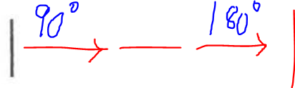
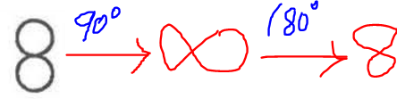
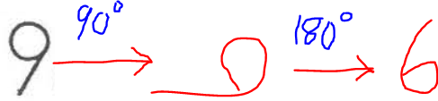
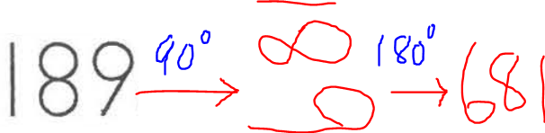
This implies that:
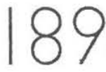
$\implies$
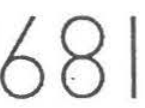
Therefore, the pattern has a rotational symmetry of 180°
(8.) A point at (−2, 8) in the standard (x, y) coordinate plane is shifted right 8 units and down
2 units.
What are the coordinates of the new point?
(9.) Parallelogram WXYZ is shown in the standard (x, y) coordinate plane below.
The coordinates for 3 of its vertices are W(0, 0), X(a, b), and Z(c, 0).
Parallelogram WXYZ is rotated clockwise ($\circlearrowright$) by 90° about the origin.
At what ordered pair is the image of Z located?
We can solve this question using at least two approaches.
Use any approach you prefer.
However, I recommend you do it geometrically for the ACT test because it is a timed test.
You have to solve this question in about a minute...so geometric approach is recommended.
(10.) In the standard (x, y) coordinate plane, A' is the image resulting from the
reflection of the point A(2, −3) across the y-axis.
What are the coordinates of A' ?
A. (−3, 2) B. (−2, −3) C. (−2, 3) D. (2, 3) E. (3, −2)
Reflection across the y-axis is Horizontal Reflection (HORE)
Only x-value changes y-value will not change
$
Point: (2, -3) \\[3ex]
x = 2, y = -3 \\[3ex]
HORE:\;\;x-coordinate\;\;changes \\[3ex]
(2, -3) \rightarrow (-2, -3)
$
(11.) Triangles $\triangle$ABC and $\triangle$A'B'C' are graphed in the standard (x, y)
coordinate
plane below.
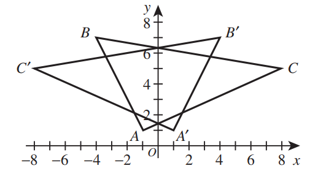
Triangle $\triangle$A'B'C' is the image of $\triangle$ABC under one of the following
transformations.
Which one?
F. 90° clockwise rotation about the origin G. 90° counterclockwise rotation about the origin H. Horizontal translation J. Reflection across the x-axis K. Reflection across the y-axis
Let us write the coordinates: of the points and their images
$
A(-1, 1) \rightarrow A'(1, 1) \\[3ex]
B(-4, 7) \rightarrow B'(4, 7) \\[3ex]
C(8, 5) \rightarrow C'(-8, 5) \\[3ex]
$
For each point, the x-coordinate changed but the y-coordinate did not change.
This implies a reflection across the y-axis
(12.) In the standard (x, y) coordinate plane, point A has coordinate (−8, −3).
Point A is translated 8 units to the right and 3 units up, and that image is labeled A'.
What are the coordinates of A' ?
A. (−16, −6) B. (−11, −11) C. (−8, −6) D. (0, 0) E. (16, 6)
A(−8, −3)
Translated 8 units right
A(−8, −3) → A'(−8 + 8, −3)
→ A'(0, −3)
Translated 3 units up
A'(0, −3) → A''(0, −3 + 3)
→ A''(0, 0)
(13.) A series of transformations are applied to the graph in the standard (x, y) coordinate plane
below.
The graph below is reflected across the x-axis.
The new graph is reflected across the y-axis.
This new graph is rotated 90° clockwise ($\circlearrowright$) about the origin.
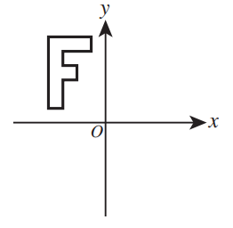
The resulting graph is one of the following graphs.
Which one?
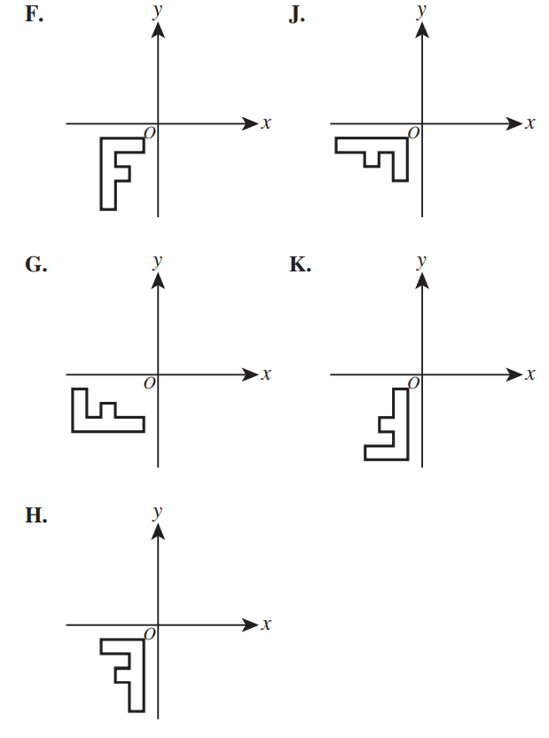
For this question, we shall solve it using both methods: geometrically and algebraically
However, I recommend you do it geometrically for the ACT test because it is a timed test
You have to solve this question in about a minute...so geometric method is recommended.
(Please do not mind my diagram. It is not drawn to scale.) 😊
First Method:Geometrically
Reflect across the x-axis (Flip)
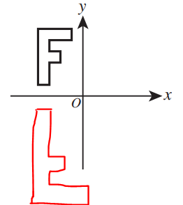
Reflect across the y-axis (Flip)
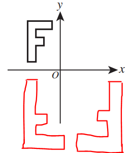
Rotate 90° about the origin (Turn)
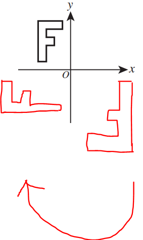
The answer is Option G.
Second Method:Algebraically
Locate two important points in the original diagram
Write the coordinates of both points (Just imagine if it was on a graph paper)
Take note of these two points because we shall look out for them in the final image.
(14.) In the standard (x, y) coordinate plane, given Parabola A with equation $y = 3x^2$, Parabola B is
the image of
Parabola A after a shift of 7 coordinate units to the left and 4 coordinate units down.
Parabola B has which of the following equations?
$
F.\;\; y = 3(x - 4)^2 - 7 \\[3ex]
G.\;\; y = 3(x - 7)^2 - 4 \\[3ex]
H.\;\; y = 3(x - 7)^2 + 4 \\[3ex]
J.\;\; y = 3(x + 7)^2 - 4 \\[3ex]
K.\;\; y = 3(x + 7)^2 + 4 \\[3ex]
$
Parabola A: Equation: y = 3x²
7 coordinate units to the left = HOSH 7 units left = 3(x + 7)²
4 coordinate units down = VESH 4 units down = 3(x + 7)² − 4
Parabola B: Equation: y = 3(x + 7)² − 4
The answer is Option J.
(15.) A point with coordinates (a, b) is plotted in the standard (x, y) coordinate plane as
shown below.
The point is then reflected across the y-axis.
Which of the following are the coordinates for the point after the reflection?
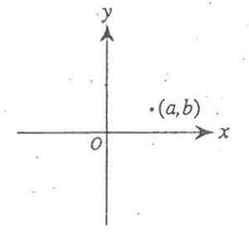
$
A.\;\; (-a, b) \\[3ex]
B.\;\; (a, -b) \\[3ex]
C.\;\; (b, a) \\[3ex]
D.\;\; (-b, a) \\[3ex]
E.\;\; (b, -a) \\[3ex]
$
For any point, (x, y); reflection across the y-axis gives (−x, y)
This implies
$
(a, b) \rightarrow (-a, b)
$
(16.) A triangle, △ABC, is reflected across the x-axis to have the image
△A'B'C' in the standard (x, y) coordinate plane: thus, A reflects to A'.
The coordinates of point A are (c, d).
What are the coordinates of point A' ?
F. (c, −d) G. (−c, d) H. (−c, −d) J. (d, c) K. Cannot be determined from the given information.
Reflection across the x-axis is Vertical Reflection (VERE)
(18.) In the standard (x, y) coordinate plane, point A has coordinates (−7, −5).
Point A is translated 7 units to the left and 5 units down, and that image is labeled A'.
What are the coordinates of A'?
(19.) The function y = f(x) is graphed in the standard (x, y) coordinate plane
below.
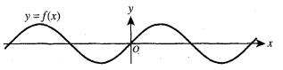
The points on the graph of the function y = 3 + f(x − 1) can be obtained from the
points on
y = f(x) by a shift of:
A. 1 unit to the right and 3 units up. B. 1 unit to the right and 3 units down. C. 3 units to the right and 1 unit up. D. 3 units to the right and 1 unit down. E. 3 units to the left and 1 unit down.
Parent Function: y = f(x)
HOSH 1 unit right
Transformed (Child) Function: y = f(x − 1)
VESH 3 units up
Transformed Function: y = f(x − 1) + 3 y = 3 + f(x − 1)
The answer is Option A.: 1 unit to the right and 3 units up.
(20.) In the standard (x, y) coordinate plane, the graph of the function $y = 5\sin(x) - 7$ undergoes a
single
translation such that the equation of its image is $y = 5\sin(x) - 14$.
Which of the following describes this translation?
F. Up 7 coordinate units G. Down 7 coordinate units H. Left 7 coordinate units J. Right 7 coordinate units K. Right 14 coordinate units
From −7 to −14
How do you get from −7 to −14?
What will you add to −7 to get −14?
Let the thing be p
$
-7 + p = -14 \\[3ex]
p = -14 + 7 \\[3ex]
p = -7 \\[3ex]
$
This represents a VESH of 7 units down
This means: Option G. Down 7 coordinate units
(21.) The point (3, 27) is labeled on the graph of f(x) = x³ in the standard
(x, y)
coordinate plane below.
The graph of f(x) will be translated 3 coordinate units to the left.
Which of the following points will be on the image of the graph after the translation?
F. (0, 27) G. (3, 24) H. (3, 27) J. (3, 30) K. (6, 27)
Based on the graph:
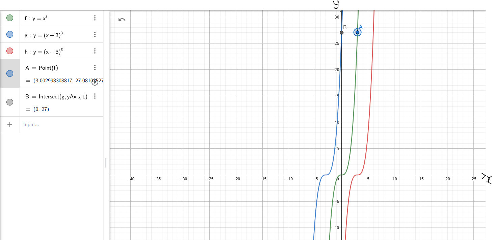
When we move the graph (green color) 3 units left, the point (3, 27) on
the graph
becomes (0, 27) on the
transformed graph (blue color)
It is seen as moving from Point A to Point B
However, please note the equations of the parent function and the transformed function
$
Parent\;\;Function:\;\; y = x^3 \\[3ex]
Transformed\;\;Function:\;\;HOSH\;\;3\;\;units\;\;left:\;\; y = (x + 3)^3
$
(22.) A line segment has endpoints (a, b) and (c, d) in the standard (x, y) coordinate
plane, where a, b, c, and d are distinct positive integers.
The segment is reflected across the x-axis.
After this reflection, what are the coordinates of the endpoints of the image?
(23.) The 2 circles graphed in the standard (x, y) coordinate plane below are centered at the
origin, O.
In coordinate units, the radius of the smaller circle is 2, and the radius of the larger circle is 4.
Points A(-4, 0), B, and C(4, 0) are on the larger circle.
The measure of ∠BOC is 45°.
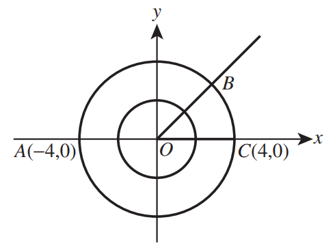
(Note: Both axes have the same scale.)
A 3rd circle, not shown, is the image resulting from applying the 1st transformation listed below to the
smaller
circle and then applying the 2nd transformation listed below to the result of the 1st transformation.
1st: A dilation with center O and scale factor 2
2nd: A translation of 8 coordinate units to the right
The 3rd circle has how many points in common with the larger circle?
(26.) In the standard (x, y) coordinate plane, the coordinates of the y-intercept of the
graph of the function $y = f(x)$ are (0, −2).
What are the coordinates of the y-intercept of the graph of the function $y = f(x) - 3$?
The parent function is $f(x) = |x|$ ...a V-shaped with vertex centered at the origin (0, 0)
Transformations of the parent function to give the child function
1st: The V-shape is turned upside down
This is VERE: Vertical Reflection: Reflection across the x-axis
Result: $f(x) = -|x|$
2nd: The vertex moved from (0, 0) in the parent to the (−3, 0)
This is HOSH 3 units left: Horizontal Shift of 3 units left
Result: $f(x) = -|x + 3|$
3rd: The vertex moved from (−3, 0) to (−3, 2)
This is VESH 2 units up: Vertical Shift of 2 units up
Result: $f(x) = -|x + 3| + 2$
∴, the graph of the child function is: $f(x) = -|x + 3| + 2$
Check (Algebraically)
x
y
0
−1
−1
0
−3
2
−5
0
Check (Graphically)
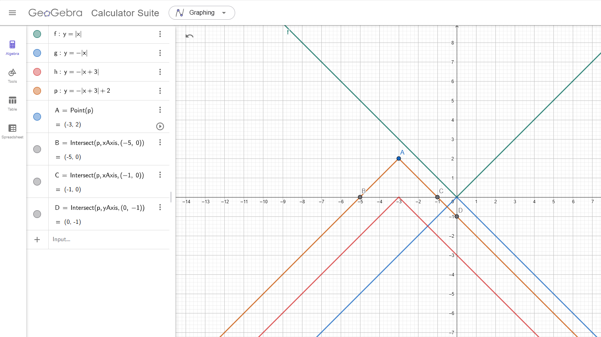
(28.) The graph of y = |x − 6| is in the standard (x, y) coordinate plane.
Which of the following transformations, when applied to the graph of y = |x|, results in
the graph
of y = |x − 6|?
F. Translation to the right 6 coordinate units G. Translation to the left 6 coordinate units H. Translation up 6 coordinate units J. Translation down 6 coordinate units K. Reflection across the line x = 6
Parent Function: y = |x|
HOSH 6 units right
Transformed (Child) Function: y = |x − 6|
The answer is Option F.: Translation to the right 6 coordinate units
(29.)
(30.) A point at (−4, 10) in the standard (x, y) coordinate plane is translated right 10
coordinate units and down 4 coordinate units.
What are the coordinates of the point after the translation?
(−4, 10) translated right 10 coordinate units x-coordinate changes, y-coordinate remains
(−4, 10): 10 units right
→ (−4 + 10, 10)
→ (6, 10)
(6, 10) translated down 4 coordinate units y-coordinate changes, x-coordinate remains
(6, 10): 4 units down
→ (6, 10 – 4)
→ (6, 6)
(31.)
(32.) The graph in the standard (x, y) coordinate plane of $y = a(x - b)^2$, where |a| ≠
|b|, is reflected across the x-axis.
Which of the following is an equation of the reflection?
$
F.\;\; y = -a(x - b)^2 \\[3ex]
G.\;\; y = a(x - b)^2 \\[3ex]
H.\;\; y = a(x + b)^2 \\[3ex]
J.\;\; x = -b(y - a)^2 \\[3ex]
K.\;\; x = b(y + a)^2 \\[3ex]
$
Reflected across the x-axis is Vertical Reflection
In Vertical Reflection: y changes, x does not change y-coordinate is multiplied by −1
The transformed y-coordinate becomes −y
$
y = a(x - b)^2 \\[3ex]
-1 \cdot y = -1 \cdot a(x - b)^2 \\[3ex]
= -a(x - b)^2 \\[3ex]
\text{Transformed } y = -a(x - b)^2
$
(33.)
(34.) The graph in the standard (x, y) coordinate plane of $y = a(x - b)^2$, where |a| ≠
|b|, is reflected across the x-axis.
Which of the following is an equation of the reflection?
$
F.\;\; y = -a(x - b)^2 \\[3ex]
G.\;\; y = a(x - b)^2 \\[3ex]
H.\;\; y = a(x + b)^2 \\[3ex]
J.\;\; x = -b(y - a)^2 \\[3ex]
K.\;\; x = b(y + a)^2 \\[3ex]
$
Reflected across the x-axis is Vertical Reflection
In Vertical Reflection: y changes, x does not change y-coordinate is multiplied by −1
The transformed y-coordinate becomes −y
$
y = a(x - b)^2 \\[3ex]
-1 \cdot y = -1 \cdot a(x - b)^2 \\[3ex]
= -a(x - b)^2 \\[3ex]
\text{Transformed } y = -a(x - b)^2
$